Lecture 2 - Factor Analysis for Human Spatial Vision
Lecturers: Dr. Alexandre Reynaud
Lab
Chapter 13: Plotting the Contrast Sensitivity Function
Citing the Guide and the Package
If you have used the smCSF package for your research, please cite the paper below:
- Min, S. H., & Reynaud, A. (2024). Applying Resampling and Visualization Methods in Factor Analysis to Model Human Spatial Vision. Investigative Ophthalmology & Visual Science, 65(1), 17-17.
Getting Started
The smCSF package will be used in this chapter, so readers should directly download it from my GitHub page using the code below.
Also, we will use the data of achromatic contrast sensitivity from 51 normal observers from this paper (a subset of the entire dataset):
Kim, Y. J., Reynaud, A., Hess, R. F., & Mullen, K. T. (2017). A normative data set for the clinical assessment of achromatic and chromatic contrast sensitivity using a qCSF approach. Investigative Ophthalmology & Visual Science, 58(9), 3628-3636.
Luckily, the data are publicly available. I have reorganized the data so that we could easily use them in the form of a data frame. Let’s load the data from online.
## Rows: 1224 Columns: 4
## ── Column specification ─────────────────────────
## Delimiter: ","
## chr (1): Subject
## dbl (3): Repetition, SpatialFreq, Sensitivity
##
## ℹ Use `spec()` to retrieve the full column specification for this data.
## ℹ Specify the column types or set `show_col_types = FALSE` to quiet this message.## # A tibble: 6 × 4
## Subject Repetition SpatialFreq Sensitivity
## <chr> <dbl> <dbl> <dbl>
## 1 S1 1 0.25 23.8
## 2 S2 1 0.25 18.0
## 3 S3 1 0.25 14.2
## 4 S4 1 0.25 5.14
## 5 S5 1 0.25 16.0
## 6 S6 1 0.25 10.9There are four columns in this data frame:
First,
Subjectrefers to each participant. There are 51 participants total in the .csv file.Next,
Repetitionrefers to each repetition of the measurement The participants performed two repetitions of the contrast sensitivity measurement.SpatialFreqrefers to spatial frequency of the stimuli that were shown to test the observers’ contrast sensitivity. There are a total of 12 spatial frequencies.The
Sensitivitycolumn refers to the linear values of the contrast sensitivity.
Brief Introduction
The contrast sensitivity function (CSF) how the observer is sensitive to an image. This image could be large (low spatial frequency) or small (high spatal frequency). To obtain the CSF, the measurement test must measure the threshold. Threshold refers to the difference in stimulus magnitude between the states of presence and absence. If the observer can just barely discriminate between these two states of the visual stimulus, this can be described as the threshold for detection.
Data Visualization
First, let’s compute the average, standard errors and standard deviation using the dataset. It is recommended that the reader has read Chapters 5 and 6 already. Understanding of summarise(), filter(), mutate() and %>% is assumed.
The code below reorganizes the ACh dataset so that instead of containing the data of each subject, it now contains the averaged data across Repetition and SpatialFreq as well as their standard errors and standard deviations. We use mean() to compute the mean, sm_stdErr() the standard error, and sd() the standard deviation.
ACh_avg <- ACh %>%
group_by(Repetition, SpatialFreq) %>%
summarise(
avgSens = mean(Sensitivity),
stdErrSens = sm_stdErr(Sensitivity),
stdDevSens = sd(Sensitivity)
)## `summarise()` has grouped output by
## 'Repetition'. You can override using the
## `.groups` argument.## # A tibble: 24 × 5
## # Groups: Repetition [2]
## Repetition SpatialFreq avgSens stdErrSens stdDevSens
## <dbl> <dbl> <dbl> <dbl> <dbl>
## 1 1 0.25 12.6 0.743 5.31
## 2 1 0.35 14.7 0.777 5.55
## 3 1 0.49 18.6 0.993 7.09
## 4 1 0.68 23.7 1.22 8.71
## 5 1 0.94 28.7 1.36 9.68
## 6 1 1.31 32.0 1.40 9.99
## 7 1 1.83 32.4 1.43 10.2
## 8 1 2.54 29.6 1.39 9.93
## 9 1 3.54 24.3 1.22 8.70
## 10 1 4.93 18.1 0.960 6.85
## # ℹ 14 more rowsLet’s create a variable that stores the data for each Repetition. Before we do that, however, it is important that we convert the data type of the Repetition column from <dbl> to <fct>, which refers from double to factor. Double refers to continuous data, whereas factor refers to categorical data.
ACh_avg$Repetition <- factor(ACh_avg$Repetition) # factor
ACh_avg1 <- ACh_avg %>% filter(Repetition == 1) # repetition 1
ACh_avg2 <- ACh_avg %>% filter(Repetition == 2) # repetition 2Let’s now plot the data for each repetition using ggplot2. Understanding of Chapters 1-4 is assumed.
ACh_avg1 %>% ggplot(aes(x = SpatialFreq, y = avgSens)) +
geom_point() +
sm_hgrid() +
xlab("Spatial frequency (c/deg)") +
ylab("Averaged sensitivity") +
ggtitle("Repetition 1 (n=51)")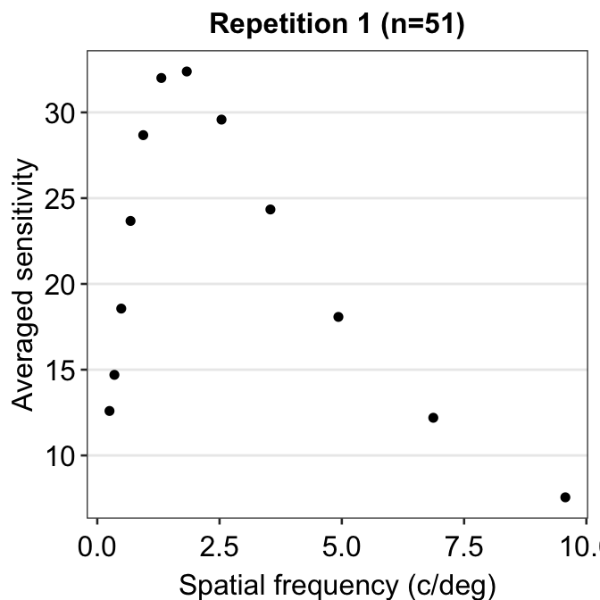
So far, this graph does not show the contrast sensitivity function, which has a rotund shape. Instead, if we connect the points, we get this plot instead.
ACh_avg1 %>% ggplot(aes(x = SpatialFreq, y = avgSens)) +
geom_point() +
geom_line() +
sm_hgrid() +
xlab("Spatial frequency (c/deg)") +
ylab("Averaged sensitivity") +
ggtitle("Repetition 1 (n=51)")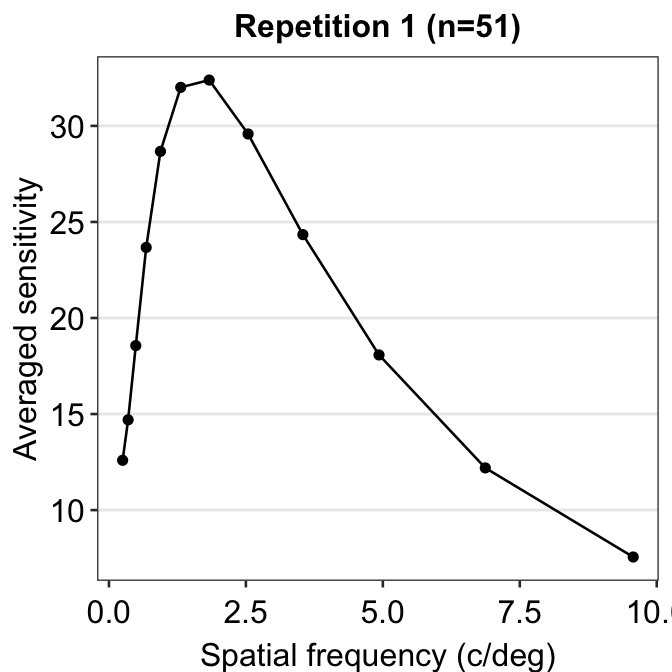
The function is still not a smooth, rotund shape. This is because it is standard to plot the contrast sensitivity function in log10 scales in both x and y axes. The code below shows the plot in the log scale.
ACh_avg1 %>% ggplot(aes(x = SpatialFreq, y = avgSens)) +
geom_point() +
geom_line() +
sm_hgrid() +
xlab("Spatial frequency (c/deg)") +
ylab("Averaged sensitivity") +
ggtitle("Repetition 1 (n=51)") +
scale_x_continuous(trans = "log10") +
scale_y_continuous(trans = "log10")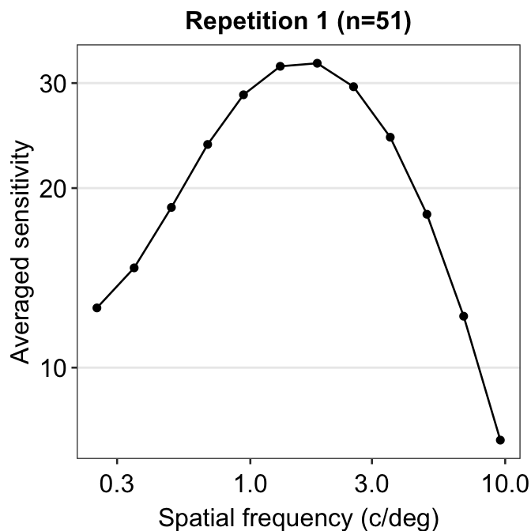
This plot shows the averaged sensitivity for each spatial frequency during the first repetition. However, the contrast sensitivity function is still missing because this plot instead shows the plot that is connected between a pair of the points. To plot the contrast sensitivity function with the data, sm_CSF() is required.
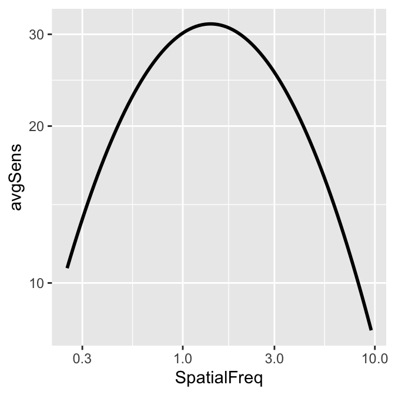
Notice that even if the data frame contains data in linear units, the plotted data from sm_CSF() are in log10 scales. It shows a nice, rotund shape that is typical of the contrast sensitivity function. The function can also plot the linear curve by setting sm_CSF(logXY = FALSE). The default is sm_CSF(logXY = TRUE).
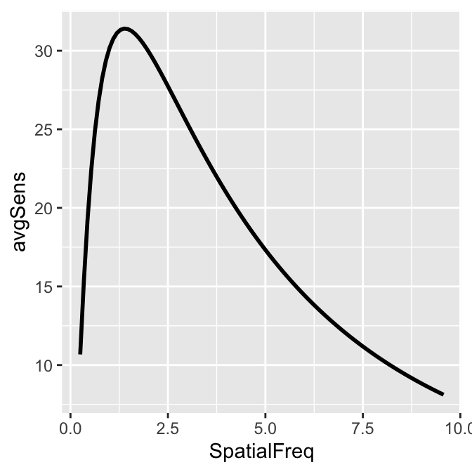
Now let’s plot a prettier contrast sensitivity function.
ACh_avg1 %>% ggplot(aes(x = SpatialFreq, y = avgSens)) +
sm_CSF(color = sm_color("wine")) +
geom_point(color = sm_color("darkred"), size = 3) +
sm_hgrid() +
xlab("Spatial frequency (c/deg)") +
ylab("Averaged sensitivity") +
ggtitle("Repetition 1 (n=51)")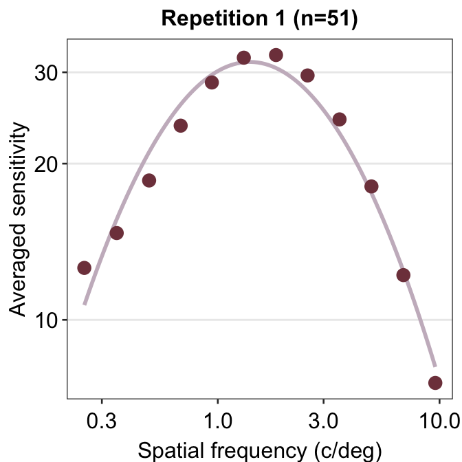
We can also plot the data using ACh_avg2, which contains data from the second repetition rather than first.
ACh_avg2 %>% ggplot(aes(x = SpatialFreq, y = avgSens)) +
sm_CSF(color = sm_color("lightgreen")) +
geom_point(color = sm_color("viridian"), size = 3) +
sm_hgrid() +
xlab("Spatial frequency (c/deg)") +
ylab("Averaged sensitivity") +
ggtitle("Repetition 2 (n=51)")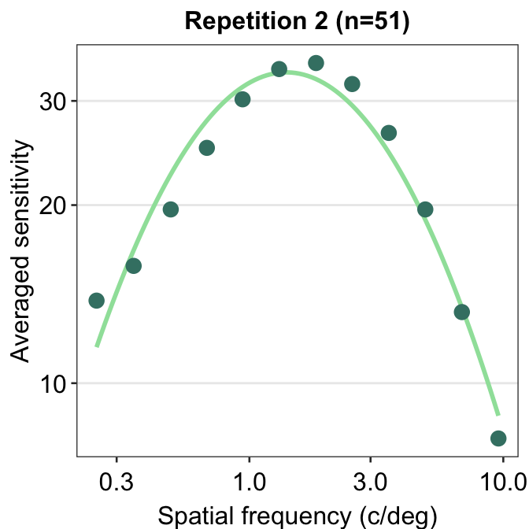
Notice that sm_CSF() is written first because the curve has to appear before the points (geom_point()); else, the points will be covered by the CSF curve. This example is shown below.
ACh_avg2 %>% ggplot(aes(x = SpatialFreq, y = avgSens)) +
geom_point(color = sm_color("viridian"), size = 3) +
sm_CSF(color = sm_color("lightgreen")) +
sm_hgrid() +
xlab("Spatial frequency (c/deg)") +
ylab("Averaged sensitivity") +
ggtitle("Repetition 2 (n=51)")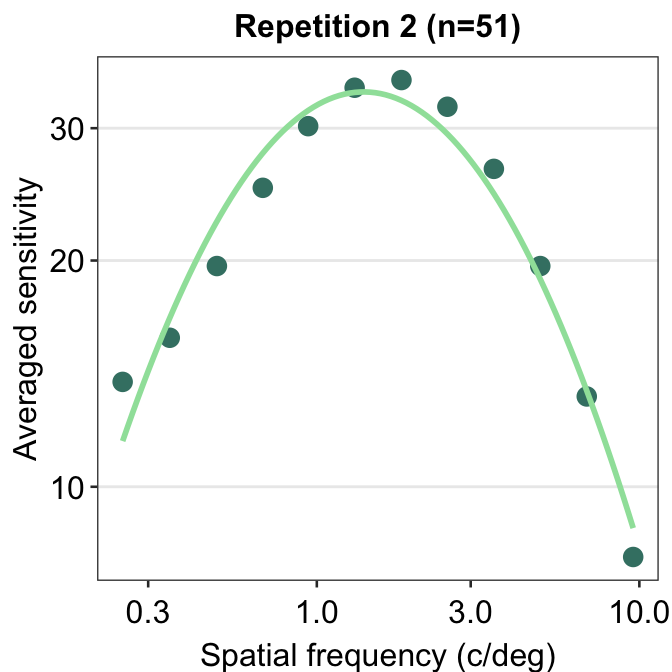
The curve appears later in this plot, so it covers some overlapping points.
smCSF also offers a function that fill the area of the CSF curve. This function is sm_areaCSF(). The default is set to plot the area in log10 scales, sm_areaCSF(logXY = TRUE).
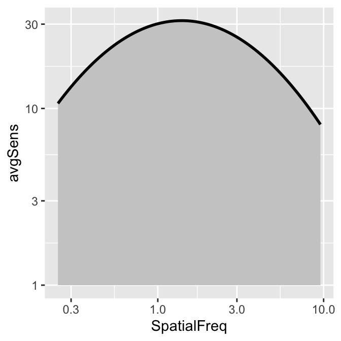
To plot the linear CSF and its area, logXY = FALSE has to be set FALSE in both sm_areaCSF() and sm_CSF(). The functions of smCSF have defaults logXY = TRUE, therefore, it is recommended that the user uploads a data frame that contains the linear data of spatial frequencies and contrast sensitivities. The functions then will convert them into log scale by default.
ACh_avg1 %>% ggplot(aes(x = SpatialFreq, y = avgSens)) +
sm_areaCSF(logXY = FALSE) +
sm_CSF(logXY = FALSE)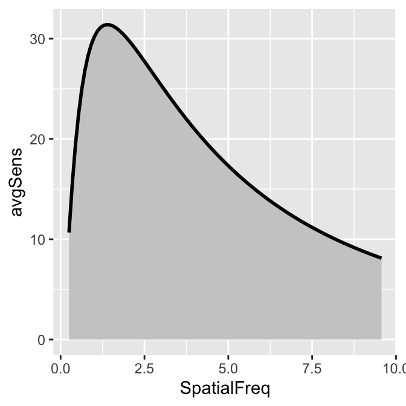
We can make the area plot prettier.
ACh_avg2 %>% ggplot(aes(x = SpatialFreq, y = avgSens)) +
sm_areaCSF(fill = sm_color("lightgreen"), alpha = 0.5) +
sm_CSF(color = sm_color("viridian")) +
sm_hgrid() +
xlab("Spatial frequency (c/deg)") +
ylab("Averaged sensitivity") +
ggtitle("Repetition 2 (n=51)") +
scale_y_log10(limits = c(1, 100)) +
annotate("text", x = 0.9, y = 1.3, label = "Area under Log CSF")## Scale for y is already present.
## Adding another scale for y, which will replace
## the existing scale.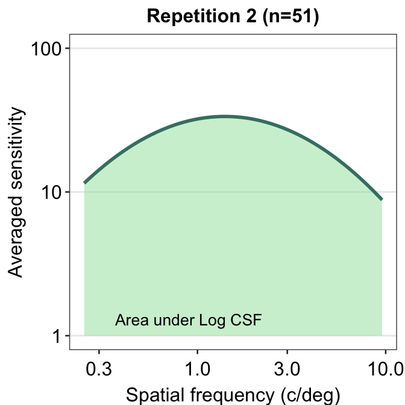
You might get a warning that says Scale for 'y' is already present. Adding another scale for 'y', which will replace the existing scale. You can ignore this warning and not be worried about it. This is because we used the function scale_y_log10() on top of sm_CSF(), which actually calls forth the function scale_y_continuous() to convert the plot into log scales. Hence, there are two functions that serve the same purpose here, so the warning message is printed.
The smCSF package also offers a function that draws a ribbon shade to denote standard error or standard deviation. This function works exactly the same as geom_ribbon(). It requires the uses to specify ymin and ymax. The example below plots standard deviation using sm_ribbonCSF(), where ymin = avgSens - stdDevSens and ymax = avgSens + stdDevSens. As before, its default is logXY = TRUE. Therefore, even if ACh_avg2 contains data in linear units, the ribbon shade that is generated by sm_ribbonCSF() will be in log unit.
ACh_avg1 %>% ggplot(aes(x = SpatialFreq, y = avgSens)) +
sm_ribbonCSF(aes(
ymin = avgSens - stdDevSens,
ymax = avgSens + stdDevSens
)) +
sm_CSF() +
scale_y_log10(limits = c(1, 100))## Scale for y is already present.
## Adding another scale for y, which will replace
## the existing scale.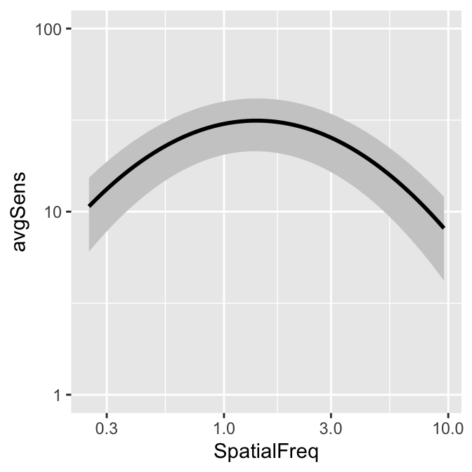
Let’s make the plot prettier using smplot.
ACh_avg1 %>% ggplot(aes(x = SpatialFreq, y = avgSens)) +
sm_ribbonCSF(
aes(
ymin = avgSens - stdDevSens,
ymax = avgSens + stdDevSens
),
fill = sm_color("wine"), alpha = 0.4
) +
sm_CSF(color = sm_color("darkred")) +
xlab("Spatial frequency (c/deg)") +
ylab("Averaged sensitivity") +
ggtitle("Repetition 1 (n=51)") +
sm_hgrid() +
scale_y_log10(limits = c(1, 100))## Scale for y is already present.
## Adding another scale for y, which will replace
## the existing scale.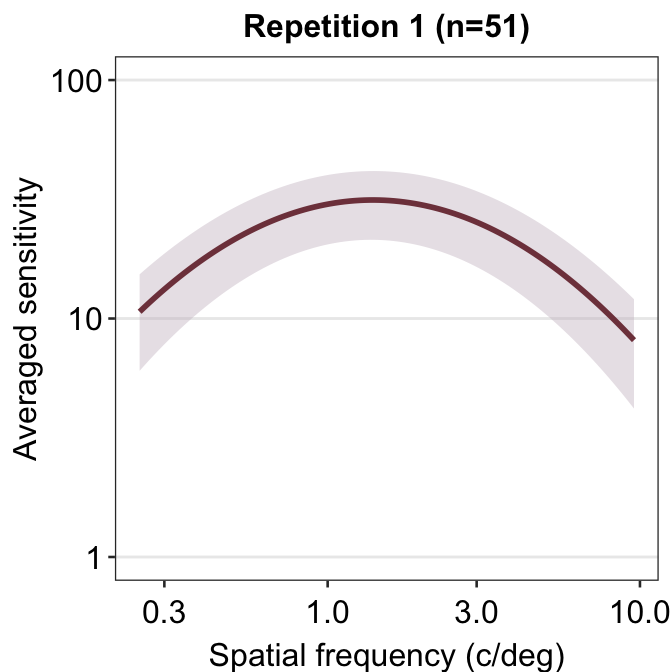
You can also shade standard error instead, but the ribbon is barely visible.
ACh_avg2 %>% ggplot(aes(x = SpatialFreq, y = avgSens)) +
sm_ribbonCSF(aes(
ymin = avgSens - stdErrSens,
ymax = avgSens + stdErrSens
)) +
sm_CSF() +
scale_y_log10(limits = c(1, 100))## Scale for y is already present.
## Adding another scale for y, which will replace
## the existing scale.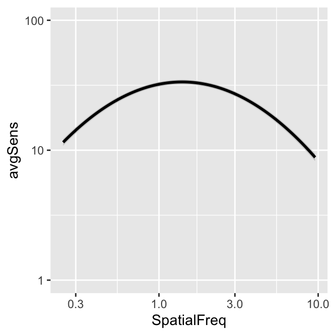
As practice, let’s plot the averaged data across all repetitions.
ACh_avg_final <- ACh %>%
group_by(SpatialFreq) %>%
summarise(
avgSens = mean(Sensitivity),
stdErrSens = sm_stdErr(Sensitivity),
stdDevSens = sd(Sensitivity)
)
head(ACh_avg_final)## # A tibble: 6 × 4
## SpatialFreq avgSens stdErrSens stdDevSens
## <dbl> <dbl> <dbl> <dbl>
## 1 0.25 13.2 0.536 5.41
## 2 0.35 15.2 0.568 5.74
## 3 0.49 19.1 0.698 7.05
## 4 0.68 24.3 0.836 8.44
## 5 0.94 29.4 0.938 9.48
## 6 1.31 33.0 0.977 9.87Here is the new data frame ACh_avg_final.
ACh_avg_final %>% ggplot(aes(x = SpatialFreq, y = avgSens)) +
sm_ribbonCSF(
aes(
ymin = avgSens - stdDevSens,
ymax = avgSens + stdDevSens
),
fill = sm_color("skyblue"), alpha = 0.25
) +
sm_CSF(
color = sm_color("blue"),
alpha = 0.4
) +
xlab("Spatial frequency (c/deg)") +
ylab("Averaged sensitivity") +
ggtitle("Contrast Sensitivity (n=51)") +
sm_hgrid() +
geom_point(color = sm_color("blue"), size = 2.5) +
scale_y_log10(limits = c(1, 100))## Scale for y is already present.
## Adding another scale for y, which will replace
## the existing scale.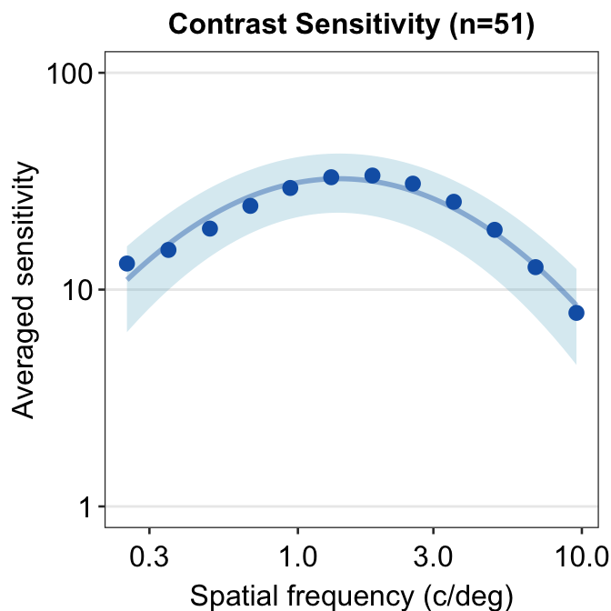
The standard deviation seems to be still broad.
Facetting the Contrast Sensitivity Functions
To facet means to split the plot into multiple plots based on a categorical variable (i.e., factor). We will facet the contrast sensitivity function plot above (the blue curve) into two panels based on two repetitions (red and green below).
## Scale for y is already present.
## Adding another scale for y, which will replace
## the existing scale.
To facet the plot, you need to have a data frame that has data with a column that specifies the categorical variable. For instance, let’s look at the data frame ACh_avg.
## # A tibble: 24 × 5
## # Groups: Repetition [2]
## Repetition SpatialFreq avgSens stdErrSens stdDevSens
## <fct> <dbl> <dbl> <dbl> <dbl>
## 1 1 0.25 12.6 0.743 5.31
## 2 1 0.35 14.7 0.777 5.55
## 3 1 0.49 18.6 0.993 7.09
## 4 1 0.68 23.7 1.22 8.71
## 5 1 0.94 28.7 1.36 9.68
## 6 1 1.31 32.0 1.40 9.99
## 7 1 1.83 32.4 1.43 10.2
## 8 1 2.54 29.6 1.39 9.93
## 9 1 3.54 24.3 1.22 8.70
## 10 1 4.93 18.1 0.960 6.85
## # ℹ 14 more rowsWe see that the first column of Ach_avg has a column named Repetition which stores whether the given data are from the first or second repetition. To see all the unique levels of Repetition, we can use the function unique().
## [1] 1 2
## Levels: 1 2To facet a plot using ggplot2, the function facet_wrap() has to be used.
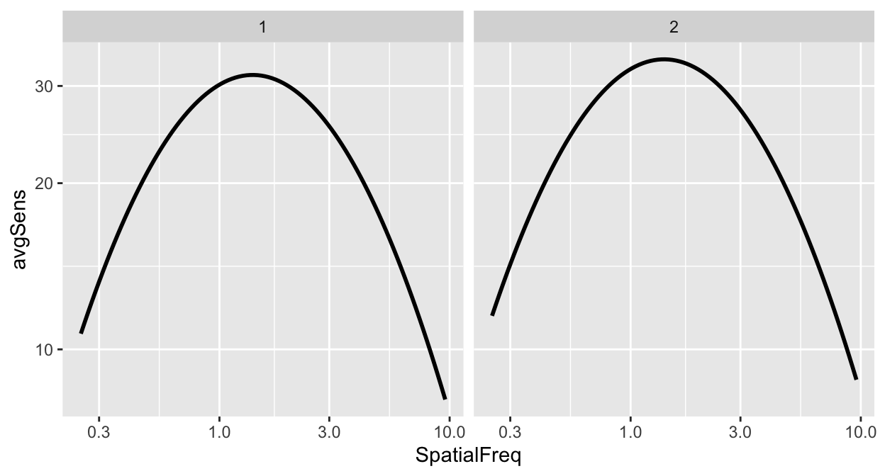
The argument inside facet_wrap has to include the tilde (~). The right side the tilde (~) should be the name of the categorical variable by which you wish to facet the plot. If the variable however happens to be continuous, facet_wrap() would not work properly.
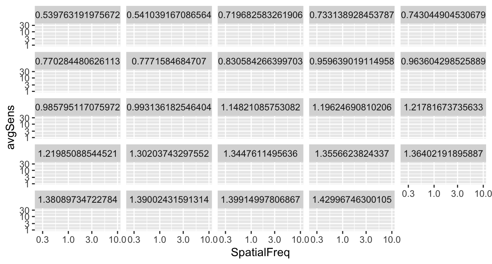
However, I do not often use facet_wrap() because the plot often ends up not being pretty. Let’s try to make it prettier.
ACh_avg %>%
ggplot(aes(
x = SpatialFreq, y = avgSens,
group = Repetition, color = Repetition,
fill = Repetition
)) +
sm_ribbonCSF(aes(
ymin = avgSens - stdDevSens,
ymax = avgSens + stdDevSens
), alpha = 0.4) +
sm_CSF(alpha = 0.4) +
sm_hgrid() +
geom_point(size = 2.5) +
scale_fill_manual(values = sm_color("wine", "lightgreen")) +
scale_color_manual(values = sm_color("darkred", "viridian")) +
xlab("Spatial frequency (c/deg)") +
ylab("Averaged sensitivity") +
facet_wrap(~Repetition) +
scale_y_log10(limits = c(1, 100))## Scale for y is already present.
## Adding another scale for y, which will replace
## the existing scale.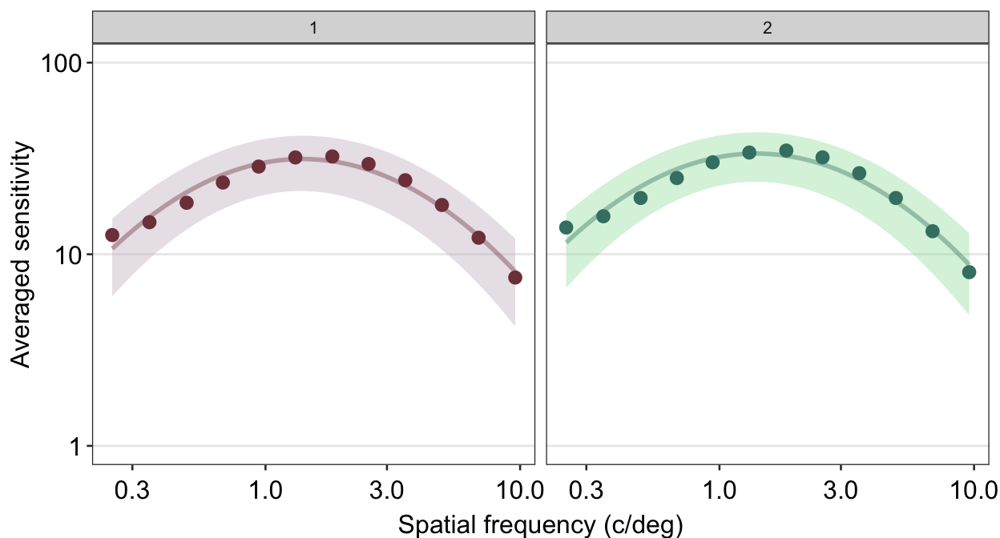
Personally, I do not like the grey-filled header of each panel. Since I personally will find myself repeatedly bypassing the default grey color into a color of my choice, I have created the function myself sm_facet_header() as part of the smCSF package.
ACh_avg %>%
ggplot(aes(
x = SpatialFreq, y = avgSens,
group = Repetition, color = Repetition,
fill = Repetition
)) +
sm_ribbonCSF(aes(
ymin = avgSens - stdDevSens,
ymax = avgSens + stdDevSens
), alpha = 0.4) +
sm_CSF(alpha = 0.4) +
sm_hgrid() +
geom_point(size = 2.5) +
scale_fill_manual(values = sm_color("wine", "lightgreen")) +
scale_color_manual(values = sm_color("darkred", "viridian")) +
xlab("Spatial frequency (c/deg)") +
ylab("Averaged sensitivity") +
facet_wrap(~Repetition) +
scale_y_log10(limits = c(1, 100)) +
sm_facet_header()## Scale for y is already present.
## Adding another scale for y, which will replace
## the existing scale.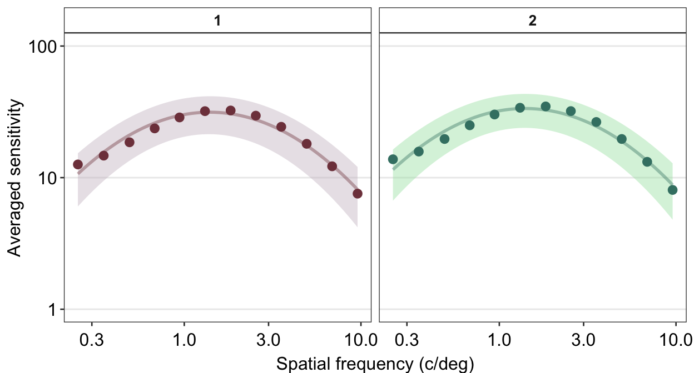
Now the title of each plot has been bolded and the filled color is white. I personally think that this plot is a lot cleaner than the default one.
Next, I wish to change the titles of each panel because 1 and 2 are not descriptive. To do so, we need to use the argument labeller within facet_wrap() to specify the title of each panel.
ACh_avg %>%
ggplot(aes(
x = SpatialFreq, y = avgSens,
group = Repetition, color = Repetition,
fill = Repetition
)) +
sm_ribbonCSF(aes(
ymin = avgSens - stdDevSens,
ymax = avgSens + stdDevSens
), alpha = 0.4) +
sm_CSF(alpha = 0.4) +
sm_hgrid() +
geom_point(size = 2.5) +
scale_fill_manual(values = sm_color("wine", "lightgreen")) +
scale_color_manual(values = sm_color("darkred", "viridian")) +
xlab("Spatial frequency (c/deg)") +
ylab("Averaged sensitivity") +
facet_wrap(~Repetition,
labeller = as_labeller(c(
"1" = "Repetition 1",
"2" = "Repetition 2"
))
) +
scale_y_log10(limits = c(1, 100)) +
sm_facet_header(font_size = 11)## Scale for y is already present.
## Adding another scale for y, which will replace
## the existing scale.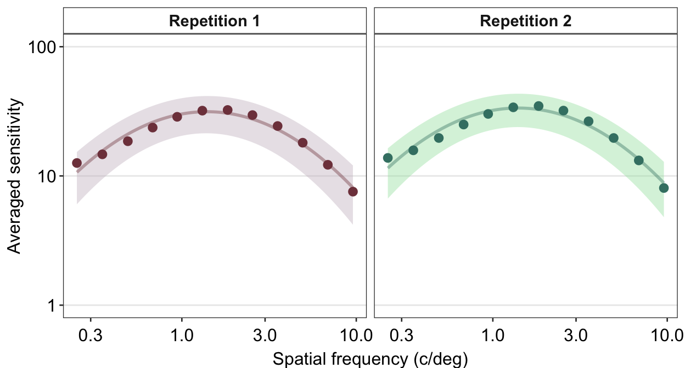
We use the function as_labeller() as part of the argument labeller() inside facet_wrap() to specify that factor level 1 should be shown as Repetition 1 and 2 as Repetition 2.
We can also change the number of rows and columns using facet_wrap(). Lets make a data frame that has 4 repetitions instead of 2.
set.seed(1)
spatFreqNum <- length(unique(ACh_avg$SpatialFreq))
ACh_avg_4rep <- rbind(ACh_avg, ACh_avg)
ACh_avg_4rep$Repetition <- rep(1:4, each = spatFreqNum)
ACh_avg_4rep[25:nrow(ACh_avg_4rep), 3:5] <- ACh_avg_4rep[25:nrow(ACh_avg_4rep), 3:5] + round(rnorm(24), 1)
ACh_avg_4rep$Repetition <- factor(ACh_avg_4rep$Repetition)We can specify the number of columns (ex. ncol = 2) and rows (ex. nrow = 2) inside the function facet_wrap(), as shown in the example below.
ACh_avg_4rep %>%
ggplot(aes(
x = SpatialFreq, y = avgSens,
group = Repetition, color = Repetition,
fill = Repetition,
alpha = Repetition
)) +
sm_ribbonCSF(aes(
ymin = avgSens - stdDevSens,
ymax = avgSens + stdDevSens
)) +
sm_CSF(alpha = 0.4) +
sm_hgrid() +
geom_point(alpha = 1, size = 2.5) +
scale_fill_manual(values = sm_color("wine", "lightgreen", "yelloworange", "crimson")) +
scale_color_manual(values = sm_color("darkred", "viridian", "orange", "red")) +
scale_alpha_manual(values = c(0.4, 0.4, 0.3, 0.1)) +
xlab("Spatial frequency (c/deg)") +
ylab("Averaged sensitivity") +
facet_wrap(~Repetition,
nrow = 2, ncol = 2,
labeller = as_labeller(c(
"1" = "Repetition 1",
"2" = "Repetition 2",
"3" = "Repetition 3",
"4" = "Repetition 4"
))
) +
scale_y_log10(limits = c(1, 100)) +
sm_facet_header(font_size = 11)## Scale for y is already present.
## Adding another scale for y, which will replace
## the existing scale.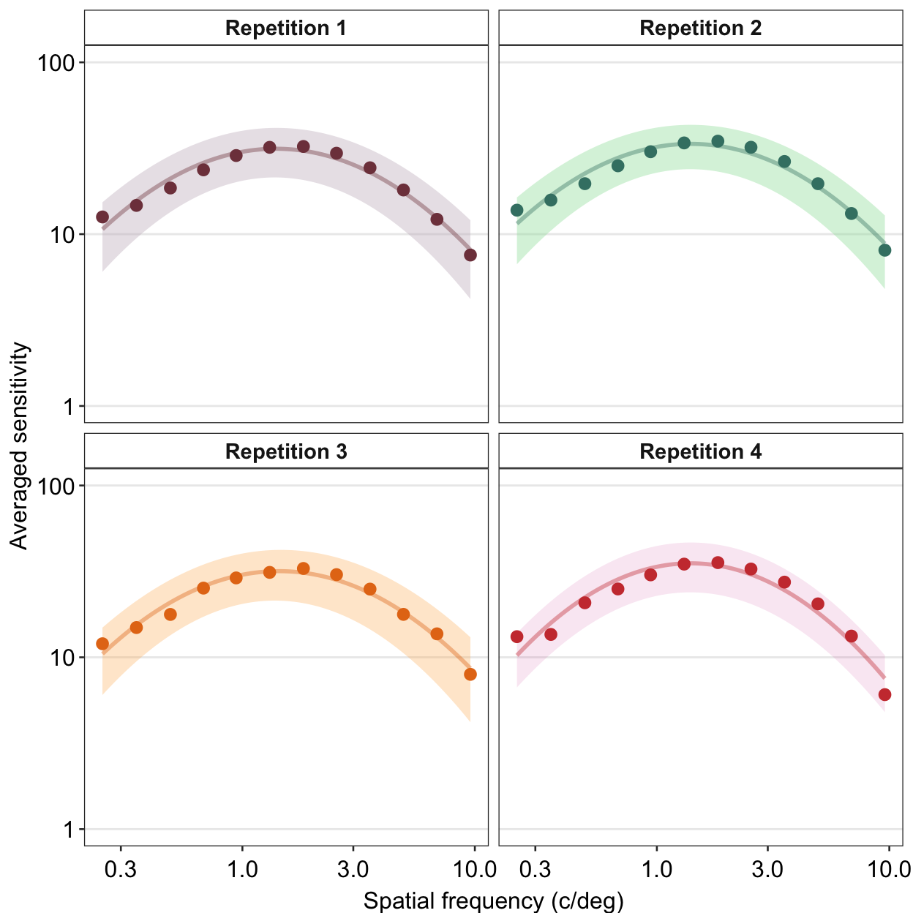
Notice that when facet_wrap() is used, there is no need to create variable for each plot like we have done in Chapter 5 and use sm_common_axis(). The preference can vary depending on the user. Rather than using facet_wrap(), however, I still prefer to store each plot separately so that I can have freedom to decide where to place each panel wherever I want using sm_common_axis().
Also, make sure that when you combine the plots using facet_wrap() you set the size of the figure properly within the save_plot() function or else the figure will appear to be too crowded. You can use base_height and base_width arguments within facet_wrap().
Another issue with plotting each contrast sensitivity function per panel is that it is visually difficult to compare whether the functions between the panels are different. One way to overcome this problem is to plot all the plots together. In this case, legend is necessary, which can be generated using sm_hgrid(legends = TRUE). Let’s use the data frame ACh_avg which has two levels in the Repetition column.
ACh_avg %>%
ggplot(aes(
x = SpatialFreq, y = avgSens,
group = Repetition, color = Repetition,
fill = Repetition
)) +
sm_ribbonCSF(aes(
ymin = avgSens - stdDevSens,
ymax = avgSens + stdDevSens
), alpha = 0.2) +
sm_CSF(alpha = 0.4) +
sm_hgrid(legends = T) +
scale_fill_manual(values = sm_color("wine", "lightgreen")) +
scale_color_manual(values = sm_color("darkred", "viridian")) +
xlab("Spatial frequency (c/deg)") +
ylab("Averaged sensitivity") +
scale_y_log10(limits = c(1, 100)) +
theme(legend.position = c(0.8, 0.2)) +
ggtitle("Achromatic CSF (n=51)")## Scale for y is already present.
## Adding another scale for y, which will replace
## the existing scale.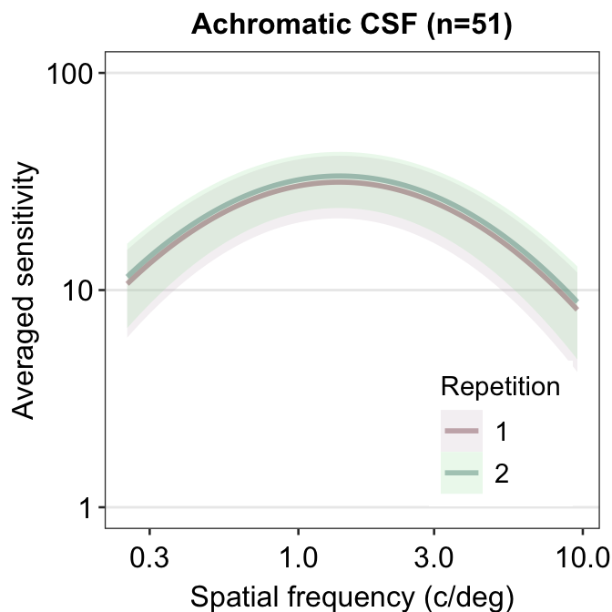
We see that these two curves are nearly identical, except that the green curve is uniformly higher than the red curve. In the next chapter, we will discuss about some techniques on how to analyze contrast sensitivity data.
Chapter 16: Factor Analysis and CSF
Citing the Guide and the Package
If you have used the smCSF package for your research, please cite the paper below:
- Min, S. H., & Reynaud, A. (2024). Applying Resampling and Visualization Methods in Factor Analysis to Model Human Spatial Vision. Investigative Ophthalmology & Visual Science, 65(1), 17-17.
Getting Started
In this chapter, we will use a public dataset of achromatic contrast sensitivity from 51 normally sighted observers.
df <- read_csv("./exercises/exercises_lecture2/data_ACh.csv") %>%
group_by(Subject, SpatialFreq) %>%
summarise(
Sensitivity = mean(Sensitivity),
Repetition = "avg"
)Factor analysis is a technique to identify latent factors that produce local patterns/correlations in a high-dimensional dataset. In other words, it aims to reduce the number of dimensions in the data.
In this dataset, there are 12 unique spatial frequencies. The sensitivity data were collected at these spatial frequencies to produce the contrast sensitivity function, which has a peak and has an asymmetrical shape. There are 12 dimensions total.
Can the curve be summarised using less than 12 dimensions? This is the purpose of factor analysis.
One way to extract an adequate number of factors/dimensions is to draw a scree plot.
Eigenvalues
The scree plot has a y-axis of the eigenvalue, which refers the amount of variance of the data from the factor of interest. Essentially, the higher the eigenvalue, the more important the factor is in the dataset.
Some methods for factor analysis determine the number of factors in a potential factor model based on eigenvalues. The Guttman Rule (i.e. K1) extracts all factors with eigenvalues larger than 1.
Another method that relies on eigenvalues to determine the number of factors is parallel analysis.
Parallel analysis
Parallel analysis by Horn is a statistical method to determine the number of factors in an exploratory factor model. It uses Monte Carlo simulation to generate a dataset of random numbers. This random dataset has the same size of the real dataset. Eigenvalues are obtained from the random dataset.
We will use psych package’s function fa.parallel to perform parallel analysis.
df_mat <- read_csv("https://www.smin95.com/data_ACh_mat.csv") # ACh data in matrix form
df_mat1 <- as.matrix(df_mat[, -1])After we have extracted the data that are in matrix form (not data frame), which is required to properly use functions of the psych package, we can then perform parallel analysis.
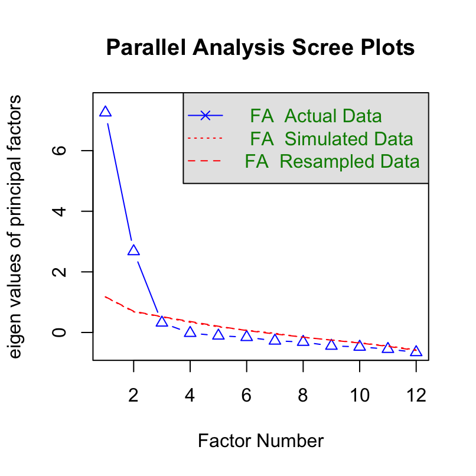
## Parallel analysis suggests that the number of factors = 2 and the number of components = NABased on the parallel analysis, we see that there are two factors with eigenvalues larger than those from the random data. Therefore, it supports a two-factor model.
Non-parametric bootstrapping
The Guttman rule can suggest different numbers of factors depending on the sample. For example, in one dataset, factor A can have an eigenvalue larger than 1 but in another dataset from another population factor B can have an eigenvalue lower than 1. Therefore the number of factors that is extracted can vary depending on the local sample. This creates variability in results. This issue can also be observed in parallel analysis.
Therefore, it might be better to include a range of uncertainty of eigenvalues so that one can better be informed about the possible range of eigenvalues in a population. This can be done by plotting 95% confidence interval of eigenvalues.
In this section, we will perform non-parametric bootstrapping to compute the confidence intervals of the eigenvalues. However, it turns out, if we resample the contrast sensitivity data directly, it removes the local correlation and therefore the influence of latent factors on the dataset, thereby erasing covariance from its existence.
Here is the original data set’s covariance of achromatic sensitivity.
## 0.25ACh 0.35ACh 0.48ACh 0.68ACh 0.94ACh 1.31ACh 1.83ACh
## 0.25ACh 22.553853 23.429188 24.498759 26.144819 27.119722 25.625359 21.60603
## 0.35ACh 23.429188 28.352093 33.069624 35.968829 36.247616 32.082207 24.74990
## 0.48ACh 24.498759 33.069624 43.379601 49.569655 50.700145 44.517286 33.59999
## 0.68ACh 26.144819 35.968829 49.569655 60.799455 65.982921 61.091867 49.19744
## 0.94ACh 27.119722 36.247616 50.700145 65.982921 76.568315 75.668977 65.44809
## 1.31ACh 25.625359 32.082207 44.517286 61.091867 75.668977 80.867183 76.21127
## 1.83ACh 21.606032 24.749903 33.599993 49.197444 65.448091 76.211272 78.52685
## 2.54ACh 16.122200 16.586739 21.887087 34.913235 50.230931 63.817194 71.38985
## 3.54ACh 10.666987 9.723740 12.519950 22.282367 34.652600 47.611582 57.03988
## 4.93ACh 6.315921 5.102076 6.577193 13.174275 21.766266 31.660552 39.90512
## 6.87ACh 3.399220 2.468148 3.327873 7.293607 12.380894 18.588982 24.32394
## 9.57ACh 1.687677 1.094862 1.576529 3.604515 6.087617 9.344805 12.76669
## 2.54ACh 3.54ACh 4.93ACh 6.87ACh 9.57ACh
## 0.25ACh 16.12220 10.66699 6.315921 3.399220 1.687677
## 0.35ACh 16.58674 9.72374 5.102076 2.468148 1.094862
## 0.48ACh 21.88709 12.51995 6.577193 3.327873 1.576529
## 0.68ACh 34.91323 22.28237 13.174275 7.293607 3.604515
## 0.94ACh 50.23093 34.65260 21.766266 12.380894 6.087617
## 1.31ACh 63.81719 47.61158 31.660552 18.588982 9.344805
## 1.83ACh 71.38985 57.03988 39.905123 24.323943 12.766688
## 2.54ACh 69.65836 59.06055 43.467590 27.852288 15.605554
## 3.54ACh 59.06055 52.88406 41.115079 28.023283 16.971267
## 4.93ACh 43.46759 41.11508 34.012289 24.895661 16.353468
## 6.87ACh 27.85229 28.02328 24.895661 19.676502 13.963902
## 9.57ACh 15.60555 16.97127 16.353468 13.963902 10.614072Covariance is high. If the dataset’s covariance is high, then it is suitable for factor analysis, as demonstrated by Kaiser, Meyer and Olkin test.
## Kaiser-Meyer-Olkin factor adequacy
## Call: KMO(r = df_mat1)
## Overall MSA = 0.58
## MSA for each item =
## 0.25ACh 0.35ACh 0.48ACh 0.68ACh 0.94ACh 1.31ACh 1.83ACh 2.54ACh 3.54ACh 4.93ACh
## 0.64 0.62 0.66 0.68 0.65 0.77 0.61 0.54 0.50 0.49
## 6.87ACh 9.57ACh
## 0.47 0.43The test reveals that covariance is adequately high (test score > 0.5) at most spatial frequencies, suggesting that factor analysis is suitable.
Now I demonstrate what happens to covariance after resampling with replacement.
set.seed(2023)
nObs <- 51
nSF <- ncol(df_mat1) # 12 SFs total
resampled_ACh <- matrix(data = NA, nrow = nObs, ncol = nSF)
for (iSF in 1:nSF) {
resampled_ACh[, iSF] <- sample(df_mat1[, iSF], nObs, replace = T)
}Here is the re-sampled data set. We can also plot the re-sampled data against the experimental data using base R (not ggplot2) since we are using matrices to store data. Plotting in base R can be more tedious but it can be quite fun as you can control every aspect of the plot.
avgs_expt <- avgs_resampled <- vector("double", nSF)
for (iSF in 1:nSF) {
avgs_resampled[[iSF]] <- mean(resampled_ACh[, iSF])
avgs_expt[[iSF]] <- mean(df_mat1[, iSF])
}
par(mfrow = c(1, 1), mar = c(4, 4.1, 1.2, 1.2))
plot(unique(df$SpatialFreq), log(avgs_resampled),
log = "x",
ylim = c(0.1, max(log(c(avgs_resampled, avgs_expt))) + 1),
xlab = "Spatial frequency",
ylab = "Contrast sensitivity", col = sm_color("blue"),
pch = 15, cex = 1.4
)
lines(unique(df$SpatialFreq), log(avgs_resampled),
col = sm_color("blue"), cex = 2
)
points(unique(df$SpatialFreq) + unique(df$SpatialFreq) * 0.1,
log(avgs_expt),
pch = 16, col = sm_color("red"), cex = 1.4
)
lines(unique(df$SpatialFreq) + unique(df$SpatialFreq) * 0.1,
log(avgs_expt),
col = sm_color("red"), cex = 2
)
legend(0.3, 1.5,
legend = c("Resampled data", "Real data"),
col = sm_color("blue", "red"), pch = 15:16, pt.cex = 1.8,
bty = "n"
)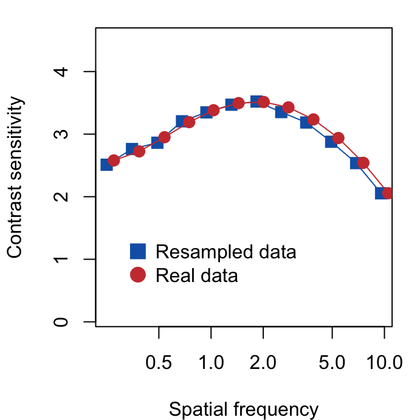
The two data sets look very similar, however, we will see that one of them (real data) can be used for factor analysis because it properly retains covariance. Therefore, it seems that factor analysis captures the invisible pattern of the data.
The covariance of the re-sampled data is shown below.
## [,1] [,2] [,3] [,4] [,5] [,6]
## [1,] 21.4627680 5.494515 10.221965102 2.729971 -8.5757210 7.4823660
## [2,] 5.4945145 22.568920 4.826946260 -5.207635 -3.0187011 2.6928204
## [3,] 10.2219651 4.826946 25.536795106 4.487807 4.5788106 0.9115256
## [4,] 2.7299707 -5.207635 4.487807344 64.213237 -6.6327835 -4.6702260
## [5,] -8.5757210 -3.018701 4.578810639 -6.632783 70.0085470 -0.9150367
## [6,] 7.4823660 2.692820 0.911525567 -4.670226 -0.9150367 76.9832954
## [7,] -2.6890863 -1.019733 1.061256799 6.332680 -7.8498872 1.1816949
## [8,] -4.4720287 2.642418 -0.625930137 -1.147609 -0.6128172 15.0063584
## [9,] -2.1897953 -3.724741 2.939968833 -6.660292 -0.1807790 -8.3721325
## [10,] 1.8767583 -0.745601 -0.429574950 -5.335867 3.9479842 1.3837711
## [11,] -2.6829180 -2.175812 -0.008150298 2.882779 2.7068057 -0.1694499
## [12,] 0.7907782 3.129077 2.218694747 5.489131 3.3182865 -4.0557000
## [,7] [,8] [,9] [,10] [,11] [,12]
## [1,] -2.6890863 -4.4720287 -2.1897953 1.8767583 -2.682918028 0.7907782
## [2,] -1.0197334 2.6424185 -3.7247411 -0.7456010 -2.175812094 3.1290769
## [3,] 1.0612568 -0.6259301 2.9399688 -0.4295749 -0.008150298 2.2186947
## [4,] 6.3326798 -1.1476088 -6.6602917 -5.3358669 2.882779438 5.4891305
## [5,] -7.8498872 -0.6128172 -0.1807790 3.9479842 2.706805733 3.3182865
## [6,] 1.1816949 15.0063584 -8.3721325 1.3837711 -0.169449871 -4.0557000
## [7,] 54.0277401 -4.2848924 3.0920237 -0.4751554 -0.748155767 -2.4362892
## [8,] -4.2848924 58.1828473 5.0594523 0.9514982 1.830535708 2.3200300
## [9,] 3.0920237 5.0594523 45.7463808 7.9552430 -2.847712952 -0.8958255
## [10,] -0.4751554 0.9514982 7.9552430 31.6710052 -0.171881025 -4.3512357
## [11,] -0.7481558 1.8305357 -2.8477130 -0.1718810 9.950180547 -0.8796060
## [12,] -2.4362892 2.3200300 -0.8958255 -4.3512357 -0.879605958 9.2390137We now see that the re-sampled data set has a much lower covariance in general. Since covariance is too low, it is not suitable to perform factor analysis.
## Kaiser-Meyer-Olkin factor adequacy
## Call: KMO(r = resampled_ACh)
## Overall MSA = 0.41
## MSA for each item =
## [1] 0.43 0.51 0.42 0.41 0.28 0.37 0.34 0.32 0.39 0.43 0.48 0.44The values from the KMO test are lower than 0.5 at most spatial frequencies, suggesting the data set is not suitable for factor analysis.
We can still try parallel analysis and see what happens.
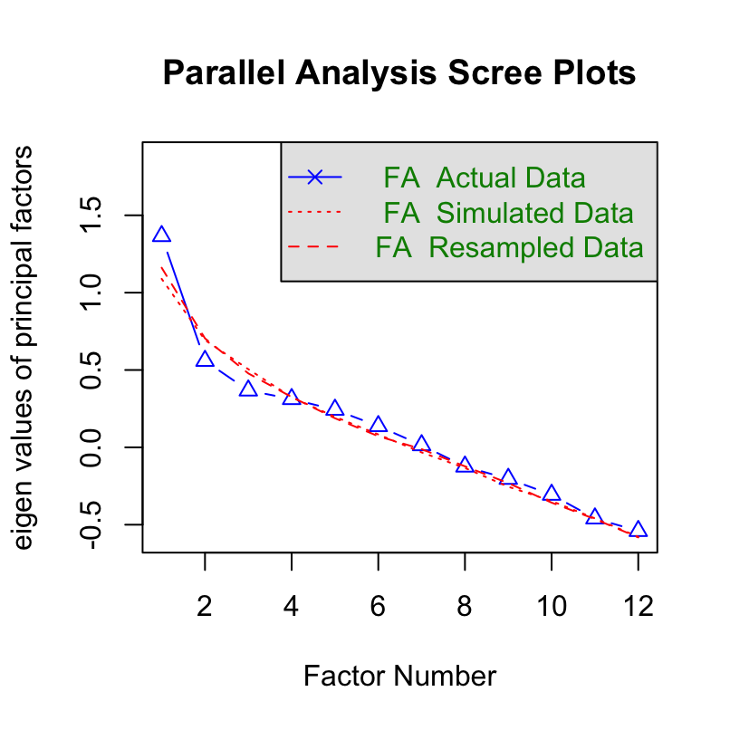
## Parallel analysis suggests that the number of factors = 1 and the number of components = NAThere is no identified factor because there is no covariance. However, re-sampling is required to compute 95% confidence interval.
A solution is to use a model that captures the contrast sensitivity function, compute parameters that retain the overall characteristic of the curve for each subject, and then re-sample the parameters with replacement. Then using the re-sampled parameters, one can refit the sensitivity data. In this example, we will re-sample for 100 times (nSim <- 100).
Calculation of the parameters from a data frame that contains contrast sensitivity data can be perfomed with sm_params_list().
param_res <- sm_params_list(
subjects = "Subject",
conditions = "Repetition",
x = "SpatialFreq",
values = "Sensitivity",
data = df
)## [1] "CSF parameters = Sensitivity ~ SpatialFreq"After we compute the four parameters of the parabola model of CSF for each subject, we resample them with replacement. Note that the sample size with resampled data should be identical to the original sample size (nObs <- 51).
Then, we can perform non-parametric bootstrapping and obtain 95% confidence interval of the eigenvalues using sm_np_boot(). It produces a data frame with the confidence intervals from re-sampling and mean eigenvalue from the multiple rounds of re-sampling. This is stored on boot_res.
## # A tibble: 24 × 5
## mean downCI upCI group nFac
## <dbl> <dbl> <dbl> <chr> <dbl>
## 1 8.51 7.36 9.75 data 1
## 2 2.09 1.25 3.07 data 2
## 3 0.417 0.140 0.765 data 3
## 4 -0.0858 -0.152 -0.0413 data 4
## 5 -0.116 -0.174 -0.0798 data 5
## 6 -0.150 -0.214 -0.101 data 6
## 7 -0.207 -0.296 -0.132 data 7
## 8 -0.253 -0.378 -0.156 data 8
## 9 -0.319 -0.438 -0.200 data 9
## 10 -0.380 -0.539 -0.231 data 10
## # ℹ 14 more rowsBy using sm_plot_boot(), we can then draw the scree plot with the eigenvalues and their 95% confidence intervals. It draws it by using ggplot2, so you can customise the aesthetics by adding (+) ggplot2 functions as I have done here with ylab().
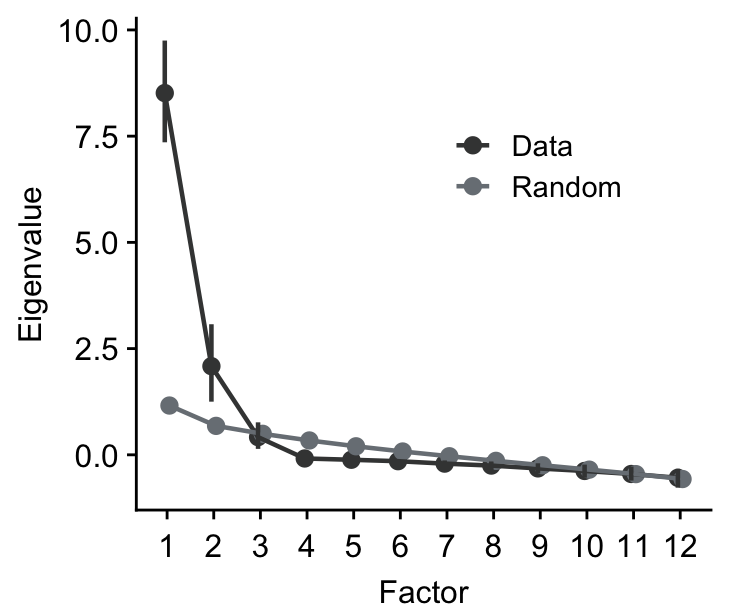
We can then extract the number of factors where the 95% confidence intervals of the eigenvalues from the observed data do not overlap with those from randomly generated data from parallel analysis. In this example, we can develop an exploratory model with two factors.
Factor Analysis
Now, we perform factor analysis with two factors. In this example, we perform varimax rotation to increase the interpretability of the results from factor analysis.
nFac <- 2
fa_res <- fa(df_mat1, nFac, fm = "minres", rotate = "varimax")
print(fa_res$loadings, cutoff = 0.5)##
## Loadings:
## MR1 MR2
## 0.25ACh 0.778
## 0.35ACh 0.926
## 0.48ACh 0.967
## 0.68ACh 0.957
## 0.94ACh 0.903
## 1.31ACh 0.797 0.524
## 1.83ACh 0.628 0.707
## 2.54ACh 0.844
## 3.54ACh 0.947
## 4.93ACh 0.997
## 6.87ACh 0.950
## 9.57ACh 0.810
##
## MR1 MR2
## SS loadings 5.442 5.085
## Proportion Var 0.453 0.424
## Cumulative Var 0.453 0.877It seems that two factors can describe enough of the achromatic data. The proportion of variance from these two factors are 87.7%. However, there needs some more work to do to confirm whether a two-factor model adequately captures the covariance of the achromatic data.